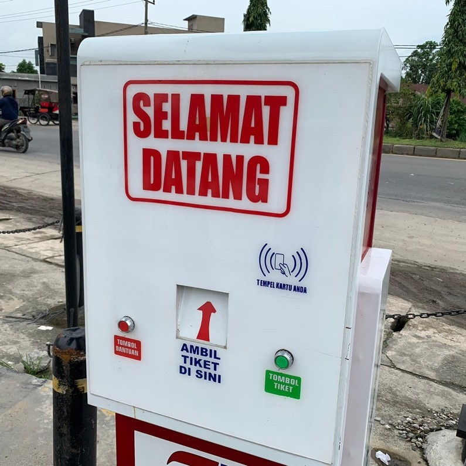

1. Menginventaris Data
Pusat Pengembangan Produk Unggulan Daerah atau yang dikenal dengan nama P3UD adalah Unit Pelaksana Teknis (UPT) bagian dari Dinas Perindustrian dan Perdagangan Kabupaten Deli Serdang yang bertanggung jawab membantu mengembangkan berbagai potensi unggulan daerah Kabupaten Deli Serdang dalam memajukan perekonomian. saat ini P3UD menjadi pusat perhatian masyarakat dikarenakan P3UD juga memiliki fasilitas area taman, restoran terapung, play ground, rumah pembibitan, gedung berisi produk pameran khas deli serdang, pojok kuliner.
2. Merancang Desain Sistem/Aplikasi
Pada skema tersebut menjabarkan bahwa apabila ada pelanggan yang ingin parkir akan ada plang penutup dimana dilengkapi dengan dispenser tiket, kamera, tombol tiket, dan printer. Maka pelanggan harus menekan tombol tiket agar plang penutup terbuka secara otomatis. Serta secara otomatis data ini langsung masuk ke server penginputan e-parking. Begitu juga pada pelanggan yang ingin keluar maka pelanggar harus keluar menuju keloket pembayaran, pada loket pembayaran ada seorang kasir yang menginput plat nomor kendaraan pengemudi, lalu kasir memberikan informasi berapa lamanya pelanggan memarkirkan mobilnya untuk menentukan tarif pelanggan. FUN Parking menerapkan praktik manajemen profesional sebagai berikut :
- Manajemen operasional untuk merekrut, melatih, dan menempatkan sumber daya manusia sesuai dengan Standard Operation Procedure (SOP) dan Local Operation Procedure (LOP).
- Data, laporan dan manajemen keuangan untuk memanfaatkan dan memproses semua data dari sistem, dan menghasilkan laporan yang valid untuk mendukung laporan manajemen.
- Manajemen biaya untuk menganalisis dan menyesuaikan biaya parkir, sesuai dengan standar / peraturan pemerintah, wilayah, lokasi dan pasar.
- Manajemen lalu lintas untuk menganalisis lalu lintas dan datang dengan pengaturan parkir yang cocok untuk kenyamanan pelanggan.
- Manajemen membuat untuk menganalisis dan mengatur penandaan yang tepat di lokasi kapasitas terbatas dengan beberapa posisi, seperti tanda-tanda dermaga lurus, paralel dan pemuatan.
- Manajemen rambu untuk menganalisa penempatan rambu yang berfungsi sesuai dengan lokasi.
- Manajemen zona untuk menganalisis seluruh area untuk mengatur zonasi yang berbeda untuk mencapai kenyamanan bagi pengunjung dan manajemen bangunan dalam mencari ruang.
3. Membangun Aplikasi/Sistem

konsultasi dan koordinasi dengan stakeholders eksternal maka penulis melakukan diskusi dan meminta dukungan kepada Sekretaris Daerah Kabupaten Deli Serdang yaitu bapak Darwin Zein,S.Sos. Dimana hal ini mendapat dukungan penuh dari beberapa stakeholders. Setiap bagian mendapatkan informasi yang jelas mengenai pencapaian dan tujuan dan mengetahui perannya masing-masing sehingga dapat memberikan masukan dan saran.
4. Pembentukan Tim Efektif

Membentuk tim efektif dalam merealiasikan optimalisasi program e-parking ini di P3UD Deli Serdang agar lebih terhandle atau terkendali dalam membentuk efektifitas. Maka dari itu diskusi oleh beberapa rekanan dan beberapa tim dalam menetetapkan tujuan tim dari dibentuknya sebuah tim kerja akan membantu tim selalu berada di jalur yang tepat untuk melakukan upaya-upaya meraih kesuksesan, dan membuat kolaborasi memungkinkan sharing skills antara anggota tim dengan memberikan kontribusi yang berbeda-beda dari setiap anggota tim pada pekerjaan. Sehingga, setiap anggota tim saling melengkapi dalam menyelesaikan misi.
5. Penyusunan panduan Penggunaan Sistem/aplikasi
Pada awal masuk pelanggan menemui dispenser tombol tiket, dilengkapi dengan kata “Selamat Datang”, Kemudian ada tombol hijau dengan tulisan “tombol tiket” yang berfungsi untuk mengambil tiket karcis yang keluar dari arah panah warna merah dengan tulisan “ambil tiket disini”, lalu ada juga tombol merah yang berfungsi untuk “tombol bantuan” hal ini langsung otomatis langsung masuk ke sistem operator bahwa ada yang meminta bantuan.
Tarif parkir yang ada di Fun Parking di P3UD ini yaitu :
- Mobil Rp 3.000 (60 Menit Pertama) Rp 2.000 (60 Menit Kedua, Max. 12 Jam)
- Motor Rp 2.000 (60 Menit Pertama) Rp 1.000 (60 Menit Kedua, Max. 12 Jam)
- Pick Up/ Truck Rp 2.000 (Maximal 12 Jam)
- Containner/Bus Rp 10.000 (Maximal 12 Jam)
- Mobil +Rp 3.000
- Motor +Rp 2.000
- Pick Up/Truck +Rp 7.000
- Containner/Bus +Rp 10.000
- Motor Rp 50.000
- Pick Up/Truck Rp 180.000
- Containner/Bus Rp 250.000
- Mobil Rp 70.000
- Motor Rp 30.000
- Pick Up/Truck Rp 100.000
- Containner/Bus Rp 200.000
- Mobil Rp 30.000
- Motor Rp 15.000
- Pick Up/Truck Rp 40.000
- Containner/Bus Rp 50.000
- Dilarang menginap tanpa seizin pengelola
- Barang berharga disimpan ditempat yang aman/ dibawa gunakan kunci ganda
- Wajib mengambil tiket saat masuk
- Wajib membawa STNK
- Petugas dibebaskan dari segala bentuk kerusakan kendaraan dan barang berharga lainnya